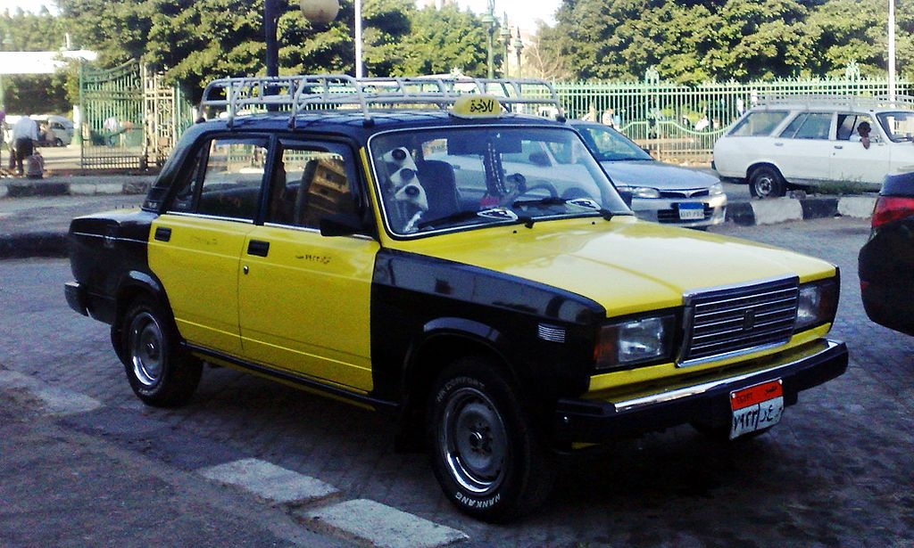
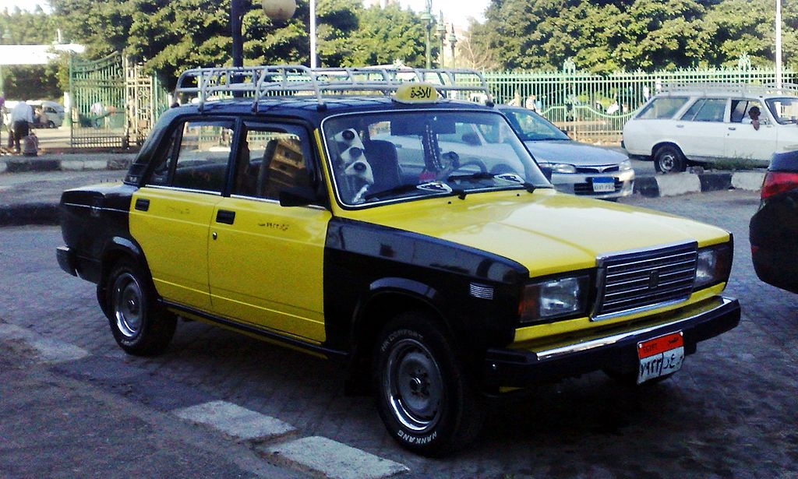

Egypt Loding Options
After a long day of travelling, some rest is much needed. Hotels in Egypt can vary a lot, there are many great 5 star hotels, but a lot more 1-2 star hotels, these are usually what you will come across. Hotel touting is also a big issue, those touting will stand outside of airports to look for foreigners and convince them that their hotel is the only one available. RoughGuides claims that these touts will take foreigners to “grotty and overpriced places that depend on touts.”. There are also 12 official hostels in Egypt, they offer reasonably priced lodging, but they have a daytime lock-out, meaning you have to go during some specific hours of the day, as well as a night curfew. Hostels also separate people by gender and whether they’re a foreigner or not. Camping is another option in Egypt, although the most difficult of the 3 options, as campsites are generally reserved for Egyptian families on the coast. The more preferred method is finding a hotel with a campsite attached to it, this comes with the added benefit of shower and bathroom facilities.
 
